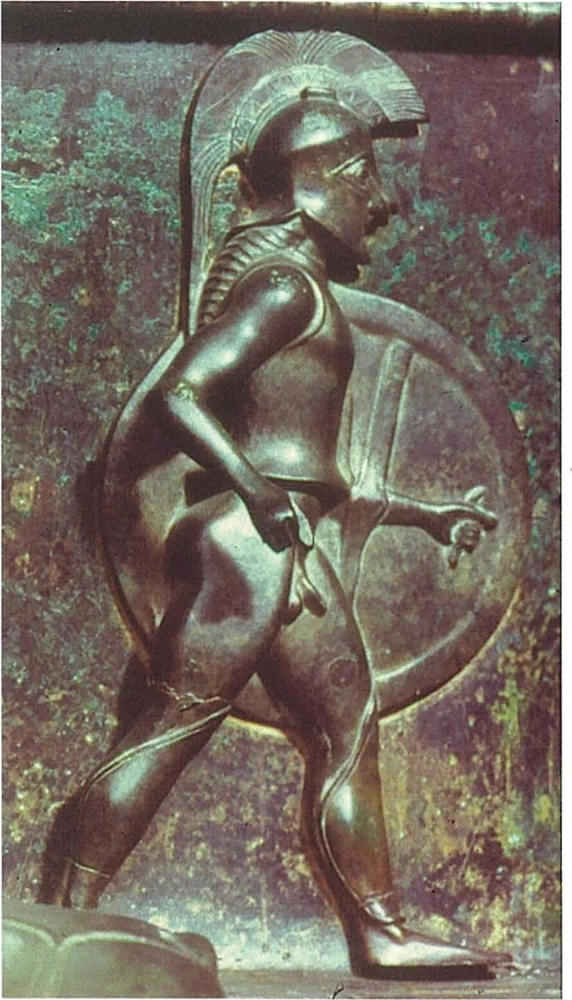
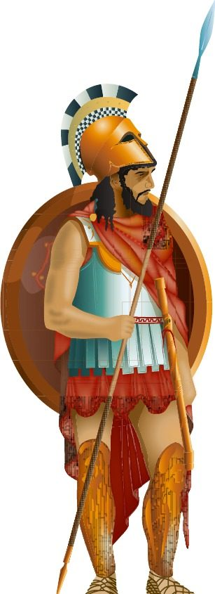
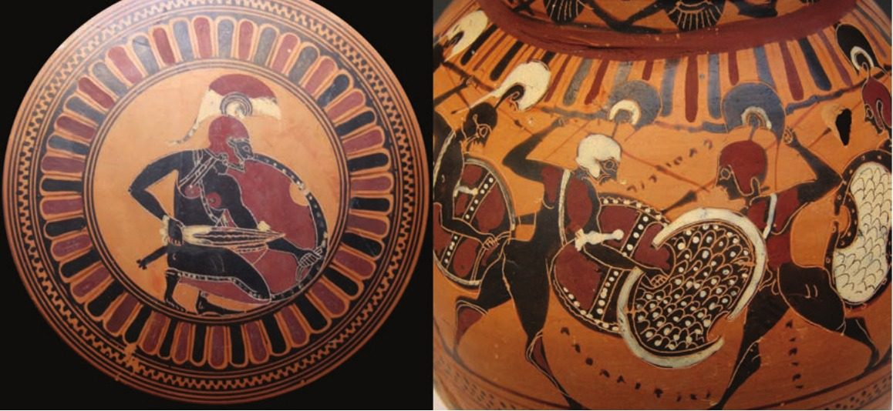
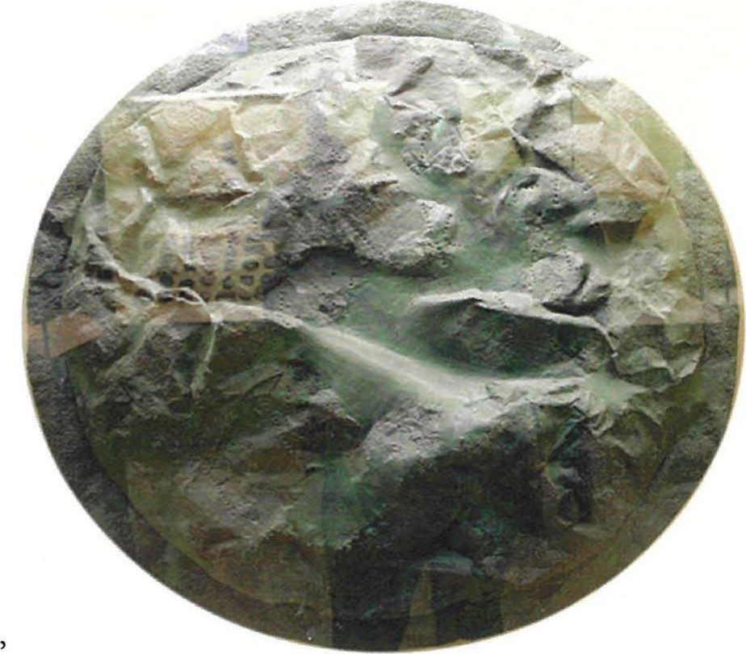

Spartan society to the Battle of Leuctra 371 BC · Lesson 11
The Spartan army
Who fought for Sparta, how was the army organised — and what did it mean to stand firm, and to die, in the line?
Year 12 Ancient History · Section II, Option G · Present with → or space · Read on a phone with R

Spaced review · 6 minutes · from memory, no notes
Five questions
- 1What did Kennell argue about Spartan education?Lesson 10
- 2What does Ducat claim about education at Sparta?Lesson 10
- 3How large was a king’s bodyguard on campaign, according to Herodotus 6.56?Lesson 4
- 4Why could Thucydides not count the Spartan army?Lesson 1
- 5Define agoge.Lessons 9–10
- In Cooley’s summary, the education system “underwent extensive ‘reconstruction’ work in the Hellenistic and Roman periods”, so much late evidence describes a reconstructed system with many new features.
- That education mattered more at Sparta than in any other Greek city: “Education is, therefore, at the heart of Spartan ideology and practice” (2025 HSC paper).
- “a personal bodyguard of a hundred picked soldiers” (Cooley D5)
- “The secret nature of their political arrangements makes it impossible to discover the numbers of Lakedaimonians” (5.68.2, Cooley E101). Today we see his estimate.
- “Upbringing” or “training”: a later name for the Spartan state education of boys; no classical source uses it for Sparta.
Learning intentions and success criteria · 2 minutes
Today’s goals
- compare ancient accounts of how the army was equipped and organised
- analyse the role of the army in Spartan society, including its ideals, its festivals and its treatment of the war dead
- describe a Spartan hoplite’s equipment and explain what Xenophon says it was meant to achieve
- explain two differences between Xenophon’s and Thucydides’ accounts of the army’s organisation, and suggest why they differ
- explain what Herodotus 7.104 and the ‘in war’ memorial of Ainesias reveal about Spartan ideals of war and death
- write an analytical paragraph on the role of the army using three sources
Spartiates were the full citizens; an army of Lacedaemonians could include perioikoi too. A hoplite was a heavily armed infantryman in the battle line; light-armed troops, such as the Skiritai and many helots on campaign, fought with lighter equipment.
Note-making · today’s routine
How to structure your notes
questions and key terms
short phrases, arrows (→ led to), abbreviations (Xen. = Xenophon, Thuc. = Thucydides)
- 1Listen and look firstDon’t copy while the slide is being explained.
- 2Write your own notes at each ✎ checkpointPhrases, not sentences. Arrows for cause and effect.
- 3Compare with the model notesThey appear one row at a time. Add what you missed in a second colour.
- 4Copy each cue question into the left columnLater, cover your notes and answer the cue questions from memory.
- 5Finish with a three-sentence summarySix checkpoints: who served · equipment · organisation · conquer or die · gods and festivals · the war dead.
Key vocabulary
Words you will use today
| The army | Meaning |
|---|---|
| hoplite | a heavily armed infantryman with a large round shield, helmet and thrusting spear |
| phalanx | a battle line of hoplites standing shoulder to shoulder, several ranks deep |
| mora · morai | a regiment: Xenophon says the army had six |
| lochos · lochoi | a unit: Thucydides counts seven at Mantinea; Xenophon gives each mora four lochagoi (unit-leaders) |
| pentekostys · pentekostyes | a company, led by a pentekonter, one of Xenophon’s “leaders of 50 men” |
| enomotia · enomotiai | literally a ‘sworn band’ (Cooley translates ‘group’), the smallest unit Thucydides names, led by an enomotarch |
| polemarch | a senior officer: in Xenophon each mora has one; the king gives his orders to the polemarchs |
| People, metal and ritual | Meaning |
|---|---|
| Skiritai | a light-armed unit of about 600, named after Skiritis, a district of Laconia, who always fought on their own |
| hippeis | “knights”: the 300 picked young men who fought on foot around the king (Lesson 9) |
| bronze | an alloy of copper and tin (not iron): it corrodes green but does not rust |
| Karneia | a nine-day festival of Apollo in late summer, the most important at Sparta |
| paian | a battle hymn sung as the army advanced |
| memorial stone | a small inscribed stone naming a dead man; the ‘in war’ stones name men buried where they fell, so they are memorials, not strictly tombstones |
Spelling: Cooley’s translations use Greek forms (Lakedaimonians, Mantineia, Sphakteria, Tyrtaios, Kastor). In your own writing use Lacedaemonians, Mantinea, Sphacteria, Tyrtaeus, Castor. Plurals: one pentekostys, two pentekostyes; one enomotia, two enomotiai.
1 · An army at the centre of society · I do
Warfare at the centre of Spartan life
Warfare was clearly a central concern of the Spartan state and dominated the communal activities of its citizens. Spartiates continued to engage in training for military pursuits, and their preferred leisure activities (exercise, hunting) could be considered as further preparation for war.
M. G. L. Cooley, Sparta (2nd edn, 2023), introduction to “The Army”
Why could Spartiates train when most Greek soldiers could not?
Helots farmed their land and perioikoi probably handled most trade and crafts (Lessons 7–8). Other cities’ infantry, Cooley says, “consisted of men who usually had little time or opportunity for military training”.
… the whole set up of their institutions is aimed at one aspect of excellence, to do with war, which is valuable as regards exerting power. This indeed was their salvation when they were at war, but their destruction when they were the rulers …
Aristotle, Politics 2.9, 1271a41–b10 · a philosopher critical of Sparta, probably writing in the 330s–320s BC, after its defeat at Leuctra; here he endorses a criticism first made by Plato · trans. in Cooley D84
A critic’s verdict: training only for war won Sparta its power but left it unable to rule well in peace.
Cooley: “the Spartans were not only very good at warfare, they also had a fearsome reputation which further enhanced their success.”
1 · An army at the centre of society · I do — far more than the Spartiates
Who served?
The core of the hoplites. The ephors proclaimed “the age groups required to serve”. In 418 BC a sixth part, “the oldest and youngest”, was sent home “to act as a home defence force”.Xenophon, Constitution 11.2 (D88); Thucydides 5.64.3 (E99)
Free men of the perioikic towns of Laconia and Messenia, who “had to follow Sparta’s command in war” (Cooley). At Plataea in 479 BC only 5,000 of the 10,000 Lacedaemonian hoplites were Spartiates; the rest were presumably perioikoi.Herodotus 9.28 (E84)
A light-armed unit of about 600, named after Skiritis in Laconia. Thucydides says they had the “privilege (unique in the Lakedaimonian army) of operating on their own as a unit”.Thucydides 5.67.1, 5.68.3 (D86)
As attendants and light-armed troops: at Plataea “thirty-five thousand light-armed helots – seven serving each man”. At Mantinea Brasidas’ men “included helots who had been freed for their services in the field”.Herodotus 9.28 (E84); Thucydides 5.67.1 (E101)
So what? As Spartiate numbers fell — about 8,000 in 480 BC by Herodotus’ figure, perhaps about 1,500 by 371 BC (an approximate figure in Cooley’s table, D29, not an ancient count; Lesson 7) — the other groups mattered more and more.
1 · An army at the centre of society · I do — who led?
The kings led — and three “guards” not to confuse
On active service, the kings lead the advance and are the last to retreat and are allocated a personal bodyguard of a hundred picked soldiers.
Herodotus, Histories 6.56 · written c. 450s–420s BC · trans. B. Wilson · Cooley D5
The kings on campaign, in Herodotus 6.56 (D5).
Chosen each year (Lesson 9). At Mantinea King Agis fought “with his bodyguard of 300 so-called knights” — infantry, not cavalry.Thucydides 5.72.4 (E103)
“his hand-picked bodyguard of three hundred men which the law assigned to him, all of them fathers of living sons”. All fathers, so probably not simply that year’s hippeis; historians debate the link.Herodotus 7.205.2 (F11)
Notes checkpoint 1 of 6
An army at the centre of society
Write your own notes first. Then compare, row by row, and add what you missed in a second colour.
2 · Equipping the hoplite · We do — Source 8.1
Xenophon on the call-up and the equipment
[2] First of all the ephors issue a proclamation setting out the age groups required to serve as cavalry, hoplites, and then craftsmen. As a result when they go to war the Lakedaimonians always have a full complement of all the things men need at home in times of peace. … [3] Included in his list of compulsory equipment for the battlefield itself, he specified a red cloak and a bronze shield for every man, on the grounds that the cloak was the least effeminate and most warlike kind of uniform and the shield was quick and easy to polish and very slow to rust. Once they had come of age, he allowed men to wear their hair long, believing that it made them look taller, finer champions of freedom, and more terrifying.
Xenophon, Constitution of the Lakedaimonians 11.2–3 · an Athenian admirer of Sparta, probably writing in the late 390s or 380s BC · “he” is Lycurgus · trans. B. Wilson · Cooley D88
Which features of a hoplite’s appearance does Xenophon describe?
A red cloak, a bronze shield, long hair.
What reason does he give for each?
The cloak looks warlike; the shield is easy to polish and slow to rust.
And the hair?
To look taller, nobler and frightening. The cloak and hair are about the effect on others; the shield’s reasons are practical.
He credits it all to Lycurgus. Xenophon “credits more aspects of Spartan society to the lawgiver than any other ancient source” (Cooley).
2 · Equipping the hoplite · I do — what the look was for
Dressed to frighten
Plutarch: “the blood-red hue creates greater fear in inexperienced fighters”, and a wound “is not easily spotted by the enemy”.Plutarch, Spartan Customs 24, trans. in Cooley D91 · c. AD 100
At Thermopylae Xerxes’ scout saw that “some stripped for exercise, others combed their hair”. Demaratus explained: “When they expect to be fighting for their lives, they pay particular attention to the grooming of their hair.”Herodotus 7.208–209 (F12–F13)
Copper and tin. It polishes bright and corrodes green, but it does not rust like iron: Xenophon says “very slow to rust”. The shield was wood faced with bronze (section 4).

Why it mattered: Cooley thinks the Spartans cultivated this warrior image, which “must have been a useful tool of psychological warfare”, and their “comparatively uniform equipment (shields, red cloaks) must have made a strong impression”.
2 · Equipping the hoplite · We do — test an image against the source If time
Which details come from Xenophon?


Which details in the modern illustration come from Xenophon, and which might the artist have invented?
From Xenophon: the red cloak, a bronze shield, long hair (the round, wood-and-bronze shape comes from other evidence).
Not in Source 8.1: the exact helmet, crest, armour pattern and greaves. Xenophon names no weapons at all in this passage.
The vase paintings are ancient, but the textbook gives no date or find-spot — so we cannot tell whether they show Spartans.
2 · Equipping the hoplite · fighting in the line If time
Shield against shield: the phalanx
But let a man go near and wound his enemy with his long spear
Or sword at close quarters and kill him;
Putting foot beside foot and pushing shield against shield,
And even bringing crest to crest, helmet to helmet,
Chest to chest let him fight with a man …
And you lightly armed men, crouch behind shields in various places
And hurl your great stones …
Tyrtaeus, fragment 11, lines 29–33 and 35–36 · mid-7th century BC · a poet who was probably Spartan · trans. K. Hughes · Cooley A8
“Foot beside foot … shield against shield”: men fought pressed together, shield to shield.
Thucydides: each man tries to shelter “behind the cover of the shield of the man on his immediate right” (5.71.1, Cooley E103). If one man broke, his neighbour was exposed.
In the same poem light-armed men still fight among the hoplites, so Tyrtaeus’ battle was probably not yet the neat phalanx of later diagrams.
Notes checkpoint 2 of 6
Equipping the hoplite
3 · Two accounts of the organisation · I do — Source 8.2, Extract A
Xenophon: “so easy to understand”
[4] Thus equipped, he divided them into six regiments (morai) of cavalry and infantry. Each infantry regiment of hoplites had a polemarch, four unit-leaders (lochagoi), leaders of 50 men (pentekonteres), and sixteen group-commanders (enomotarchai). All these companies at the word of command form up into sections, [two], three, or six abreast. [5] Most people think that the Lakonian fighting formations are very complicated; in this they are totally mistaken. In fact the opposite is true. In the Lakonian order of battle, the officers occupy the front rank, and each file is a self-sufficient fighting unit. [6] All this is so easy to understand that anyone who can distinguish one man from another cannot make mistakes …
Xenophon, Constitution of the Lakedaimonians 11.4–6 · probably written in the late 390s or 380s BC · trans. B. Wilson · Cooley D88
What does Xenophon actually list?
Officers, not units: in each mora a polemarch, 4 lochagoi, the pentekonteres and 16 enomotarchai. The units are inferred from them.
As printed in Cooley, there is no number before “leaders of 50 men”. The Greek text has eight. Note it — but never add the word inside a quotation.
What is his tone?
Confident: it is simple, and “Most people” are wrong.
3 · Two accounts of the organisation · I do — Source 8.2, Extract B
Thucydides: an estimate “by the following method”
[68.2] But it would be impossible for me to give the exact numbers of the forces on either side, whether of the individual units or the whole armies. The secret nature of their political arrangements makes it impossible to discover the numbers of Lakedaimonians … Nevertheless, it is possible to make an estimate of the Lakedaimonian contingent on this occasion by the following method: [68.3] Excluding the Skiritai, who numbered about 600 in all, seven units (lochoi) fought in this battle. In each unit there were four companies (pentekostyes), and in each company four groups (enomotiai). The front rank of each group had four men, but the depth behind them varied according to the judgement of the different unit leaders (lochagoi); but on average they stood usually about eight deep. The front line, excluding the Skiritai, was therefore 448 men.
Thucydides, History of the Peloponnesian War 5.68.2–3 · an Athenian general, exiled after 424 BC, writing in the late 5th century BC · trans. B. Wilson · Cooley E101
Which extract admits uncertainty — and why?
Thucydides: Spartan secrecy hid the numbers, so he estimates from one battle.
What units does he name?
7 lochoi; 4 pentekostyes in each; 4 enomotiai in each of those. No morai.
Admitting uncertainty makes him more trustworthy in one way: he tells us how he reached his figure, so we can test it.
3 · Two accounts of the organisation · I do — the two schemes
Two schemes — compare them, never blend them
3 · Two accounts of the organisation · We do — the comparison grid If time
Xenophon v. Thucydides
| Xenophon, Constitution 11 (D88) | Thucydides 5.68 (E101) | |
|---|---|---|
| Writer and access | Athenian; fought for King Agesilaus; given an estate near Olympia by Sparta, and “may have lived in Sparta” (Cooley) | Athenian general, exiled after 424 BC; knew “affairs on both sides, especially the Peloponnesians’” (5.26.5) |
| What it describes | the army in general, as Lycurgus supposedly set it up · probably late 390s or 380s BC | one battle, Mantinea, 418 BC · written late 5th century BC |
| Largest unit | 6 morai “of cavalry and infantry” | 7 lochoi, plus the Skiritai (about 600); no morai |
| Inside it | officers in each mora: 1 polemarch, 4 lochagoi, [8] pentekonteres, 16 enomotarchai (units inferred) | 4 pentekostyes in each lochos; 4 enomotiai in each pentekostys |
| Files and depth | “the officers occupy the front rank”; the line “can be thinner or deeper as tactics require” | four men in front; depth “varied”, “on average … about eight deep” |
| Numbers and tone | no total · “so easy to understand” | front line 448, an estimate · “impossible to discover the numbers” |
In Xenophon, sixteen enomotarchai (so, we infer, sixteen enomotiai) make up a whole mora; in Thucydides, sixteen enomotiai make up a single lochos.
3 · Two accounts of the organisation · I do — Thucydides’ arithmetic If time
From one enomotia to 448 men in the front line
3 · Two accounts of the organisation · I do — four explanations
Why do the two accounts differ?
Thucydides describes 418 BC; Xenophon probably wrote two or three decades later. The army may have been reorganised in between, perhaps as Spartiate numbers fell.
His figures give only about 3,600 men. Cooley: “So it is widely assumed that Thuc.’s totals should be doubled because he missed out the mora”.
Cooley is blunt: “it is difficult to believe that Xenophon fully understood what he was talking about”.
Following Simon Hornblower, Cooley suggests “it may simply be right to conclude (as at 5.68.2) that the secretive Spartans did not want Thucydides to understand the structure of their army”.
Even ancient writers disagreed on the size of a mora: “Ephoros says a mora consists of five hundred men; Kallisthenes seven hundred; some others, including Polybius, nine hundred” (Plutarch, Pelopidas 17, Cooley D87).
Does Spartan secrecy make Thucydides more or less reliable?
Check for understanding · hinge question · gesture vote: one finger or two
Which extract admits uncertainty about numbers?
- 1Extract A · Xenophon, Constitution of the Lakedaimonians 11
- 2Extract B · Thucydides 5.68
Thucydides: “it would be impossible for me to give the exact numbers”. Xenophon says it is all “so easy to understand”.
Notes checkpoint 3 of 6
Two accounts of the organisation
4 · Conquer or die: the ideal and the reality · We do — Source 8.3
“They have a master above them – the law”
“So the Lakedaimonians, fighting singly, are the equals of any man, but together they are the best of all. They are free, but not altogether free. For they have a master above them – the law, which they fear much more than your subjects fear you. They do whatever it commands; and it always commands the same thing; not allowing them to run away, no matter what the number of men facing them in battle, but staying in the line of battle to conquer or die.”
Herodotus, Histories 7.104.4 · written c. 450s–420s BC; the scene is set in 480 BC · trans. B. Wilson · Cooley D46
Whose voice is this?
An exiled Spartan king, speaking to the Persian king — as written by Herodotus. Cooley: “Hdt. here imagines the exiled king Demaratos … offering this (prophetic …) advice”.
What does the speech reveal?
Obedience to law, and never retreating, as the core of a Spartan’s duty.
Free Greeks under law, Persians under a master: the contrast suits Herodotus’ story, and Thermopylae follows soon after. An ideal — so what evidence would show whether Spartans lived up to it?
4 · Conquer or die · I do — rewards and misery
How the ideal was enforced
[9.1] Another admirable feature of Lykourgan policy was to create a culture in the state where a noble death was seen as preferable by far to a disgraceful life. … [4] … But in Lakedaimon, everyone would be ashamed to share a meal with a coward in the same mess, or to wrestle with him at the gymnasium. [5] Often when sides are being picked for ball games, it is the coward who gets left out … [6] With such a burden of disgrace heaped upon cowards, it is hardly surprising that men there prefer death to a life of such dishonour and disgrace.
Xenophon, Constitution of the Lakedaimonians 9.1–6 (part) · probably late 390s or 380s BC · trans. B. Wilson · Cooley D96
A coward was shunned in the mess, at the gymnasium, in games and in the street — and, Xenophon adds, his female relatives might not marry and he had to live without a wife.
Men disgraced for cowardice were called tresantes, “tremblers” (Lesson 7). Plutarch says Spartan songs “castigated as cowards those who ‘trembled’” (Lykourgos 21.2, Cooley D97).
Xenophon is an admirer describing the system as it should work. What happened when it was tested?
4 · Conquer or die · the reality — and Source 8.4
The reality: surrender on Sphacteria, 425 BC
[38.5] … 420 hoplites in all crossed over to the island. Of these 292 were taken alive and transported to Athens, of whom about 120 were Spartiates … [40.1] This was for the Greeks the most extraordinary thing to have happened in the war. For they thought the Lakedaimonians would not surrender their weapons through starvation or any other force, but would keep them, fight as long as they were able and die fighting.
Thucydides 4.38.5, 4.40.1 · trans. B. Wilson · Cooley E94, E95
About 120 Spartiates surrendered after seventy-two days trapped on the island. In 421 BC Sparta stripped them of citizenship; “In due course, however, they were reinstated” (Thucydides 5.34, E52).

Source 8.4: is this the shield the Athenians hung up after Pylos?
Perhaps. Cooley B13 is a bronze shield-facing “found in a cistern in the agora at Athens”, punched with the words “The Athenians from [spoils from] the Lakedaimonians at Pylos.” The punched letters at its upper left fit, but the textbook gives no museum — check before you claim it.
4 · Conquer or die · the ideal still mattered
Mantinea, 418 BC — and a saying from the mirage
Two commanders refused Agis’ order in the battle “and as a result later faced a charge of cowardice and were exiled from Sparta” (Thucydides 5.72.1, E103).
Outmanoeuvred, the Spartans won: “when it came to sheer courage in battle they now proved themselves a match for any” (5.72.2). The victory, says Thucydides, “expunged” the charge of cowardice from Sphacteria (5.75.3, E104).
A Spartan mother hands her son his shield: “Son, with it or on it.” Cooley calls it “quite problematic as dead Spartans were not carried back home at all, but buried where they fell” (Plutarch, Sayings of Spartan Women, F35).
Ideal and reality: the ideal was real enough to punish failure and to win battles — but Spartans did not always live up to it, and some of its most famous expressions belong to the Spartan mirage.
Notes checkpoint 4 of 6
Conquer or die: the ideal and the reality
5 · Gods, festivals and campaigning · We do — two explanations
Into battle: hymn to Castor, or keeping in step?
[2] It was now, when their regiments were all deployed and the enemy coming to close quarters, that the king would simultaneously sacrifice the usual she-goat, command all the army to don their garlands, and order his pipers to play the hymn to Kastor.
Plutarch, Life of Lykourgos 22.2 · written c. AD 100 · trans. B. Wilson · Cooley D93
The Lakedaimonians advanced with cool deliberation to the sound of flutes from the many musicians in their ranks. This had nothing to do with religion, but was intended to ensure that they advanced at a uniform pace so that their ranks remained in close order …
Thucydides 5.70.1 · an outsider, writing in the late 5th century BC · trans. B. Wilson · Cooley D92
Compare Plutarch and Thucydides on the role of music before battle. Could both be true?
Yes: a religious rite and a practical drill can be the same act — Plutarch himself goes on to describe the army advancing “in step … in close order”. Plutarch, writing centuries later, stresses the gods; Thucydides, an Athenian outsider, the tactics.
Poetry went to war too: on campaign the Spartans sang Tyrtaeus’ songs after dinner, and the commander gave “a prize of meat to the winner” (Philochorus, in Athenaeus 14.29, Cooley A2).
5 · Gods, festivals and campaigning · We do — Source 8.5
“Until the full moon”: Marathon, 490 BC
[106.1] Philippides reached Sparta from the town of Athens within two days, and spoke to the leaders, [106.2] “Lakedaimonians, the Athenians have need of you to help them and not to watch the oldest city in Greece falling into slavery at the hands of foreigners. For even now Eretria has been enslaved and Greece is weaker by the loss of a fine city.” [106.3] He spoke as he had been told, and the Lakedaimonians wished to help the Athenians but were not able to do so immediately because they did not want to break their law: it was the ninth day of the month and they said they could not march until the full moon.
Herodotus, Histories 6.106 · written c. 450s–420s BC · trans. B. Wilson · Cooley H16
What reason does Herodotus give?
Their law: no march before the full moon. He names no festival.
Cooley’s introduction to the Karneia makes the link: “Celebration of the festival was the reason given by the Spartans for not being able to help the Athenians at Marathon”. Herodotus’ words do not.
Forrest: “Even if the religious obstruction which they pleaded was genuine, it was an excuse rather than a reason”. Rhodes: “such matters were taken seriously”. After the full moon 2,000 Lacedaemonians reached Attica in two days — too late (Herodotus 6.120, H17).
5 · Gods, festivals and campaigning · I do — festivals that shaped campaigns
Festivals and campaigns
Cooley: “the most important Spartan festival, celebrated over nine days in late summer”; quoting the Oxford Classical Dictionary, “above all a choral and musical festival of Panhellenic importance”.
Leonidas’ 300 went ahead; the main army would follow “Once they had finished celebrating the Karneia”.Herodotus 7.206 (F11)
After Mantinea, “As it happened to be the period of the festival of Karneian Apollo, they held the appropriate celebrations.”Thucydides 5.75.2 (E104)
“The people of Amyklai always return for the Hyakinthia”; Agesilaus left them at Lechaeum — an episode that, Cooley says, “led to a Spartan military reversal”.Xenophon, Hellenika 4.5.11 (C70)
A late claim: Demetrios of Skepsis (born c. 214 BC), quoted by Athenaeus, says “The Karneian festival is for the Lakedaimonians a representation of military training” (Cooley C68).

Notes checkpoint 5 of 6
Gods, festivals and campaigning
6 · The war dead · We do — Source 8.6
Tyrtaeus on the man who falls in the front line
And moreover if he falls in the front line and loses his dear life
Stabbed from in front many times through the chest,
Through bossed shield and breastplate,
Bringing glory to his city and its people and his father,
This man is bewailed by young and old alike,
The whole city is distressed by a grievous sense of loss;
His tomb and his children and their children,
And all his line thereafter are renowned among men;
Never does his good fame perish nor his name,
But though he is beneath the earth, he is immortal,
Since raging Ares laid him low when he was standing firm,
Excelling while fighting for his land and his children;
Tyrtaeus, fragment 12, lines 23–34, quoted in Stobaeus, Anthology 4.10 (an anthology probably of the early 5th century AD) · composed mid-7th century BC by a poet who was probably Spartan · trans. K. Hughes · Cooley A9
What does the poem promise the man who dies, and his family?
The whole city’s mourning; fame for his tomb, his children and their children; a name that never dies.
On what condition?
That he fell “standing firm”, wounded in front: courage in the line.
Poetry meant to inspire, not a record of real funerals — and it survives only in an anthology over a thousand years later.
The 2021 HSC printed lines 27–34 of this poem, in another translation, as Source L (section 7).
6 · The war dead · I do — Plutarch, twice
Whose names could be inscribed?
He (Lykourgos) did away with inscription on memorials (mnēmeia), except for those who had died in war, and also with mourning and lamentations.
Plutarch, Spartan Customs 18 (Moralia 238d) · trans. in Cooley B35a
Those burying the body were not allowed to inscribe the name, unless the man had fallen in battle or the woman was a priestess. Mourning was limited to a brief period of eleven days.
Plutarch, Life of Lykourgos 27.2 · written c. AD 100 · trans. B. Wilson · Cooley B35b
Which version is better? Cooley: “His second version here shows him changing the correct version of a ban on memorials to a less accurate reference to tombstones.” Spartans who fell abroad were buried where they fell.
Priestess or childbirth? Cooley’s text reads priestess. Some translations, such as Talbert’s Penguin, “have been changed to read as if he mentioned women dead in childbirth, rather than priestesses.” Two inscriptions do name women “in bed” (presumably childbirth), but a list from Tainaron marks only three of its seven women this way (Dillon, in Cooley). Treat it as a live question.
6 · The war dead · We do — Source 8.7
The memorial stone of Ainesias
IN WAR
Source 8.7 · the text in translation, “Ainesias in war” · early 4th century BC · 39 × 22 cm · Sparta Museum SM 377 · IG V 1, 703 · Cooley B36
“24 ‘in war’ stones are known in total”, against thousands of Athenian tombstones. “Spartan memorials are also small (on average only just over a foot tall) and plain”; this one is “extremely plain, without so much as a border”.
Cooley: “the stele are memorials, not strictly tombstones as Spartans were buried where they fell.” The dead of Mantinea were buried at Tegea (Thucydides 5.74.2), yet a stone for “Eualkes in war at Mantineia” stood at Geronthrai in Laconia (Cooley B43).
At Athens a tomb in the Kerameikos held 24 men killed in 403 BC, including two polemarchs, perhaps wrapped in red cloaks: “Several still had weapons lodged in their fronts” (Cooley B25a).
So what? Sparta reserved a named memorial for men who died in war, and its songs “celebrated those who had died for Sparta as being blessed by the gods” (Plutarch, Lykourgos 21.2, Cooley D97).
Notes checkpoint 6 of 6
The war dead
6 · You do · analytical paragraph · 18 minutes · press K for the timer
Analyse the role of the army in Spartan society.
- Judge — a qualified answer: what was the army’s main role in society?
- Evidence — Herodotus 7.104 (D46), Xenophon 11 (D88) and the Ainesias memorial (B36), with provenance
- Analyse — at least two “This Does That” sentences
- Evaluate — an idealising source, or a reality that tested it
- Resolve — your refined judgement
Demaratus’ claim that the law keeps Spartans ‘in the line of battle to conquer or die’, together with the plain memorial ‘Ainesias in war’, suggests that Sparta treated a soldier’s death in the line as the fullest service a citizen could give.
Stuck? Start: “The army’s chief role in Spartan society was not only to win battles but to …”
6 · You do · annotation · 8 minutes
Annotate four sources: O, V, P, R, L
- Herodotus 7.104 (D46) — Cooley says Herodotus “imagines” the speech. Whose views are we reading?
- Xenophon 11 (D88) — why does he give a practical or moral reason for each feature he credits to Lycurgus?
- Thucydides 5.68 (E101) — which extract admits uncertainty, and why does that make it more trustworthy in one way?
- Ainesias (B36) — the stone is authentic but dated only by its letter forms. Does that matter? What does it not tell us?
Short notes in your own words, in the margin of your copy of each source.
O: Thuc., Athenian general, exiled after 424 BC; knew “both sides” · V: units at one battle, 418 BC: 7 lochoi, 4 × 4, front line 448 · P: to estimate an army he admits he cannot count · R: shows his method (testable); secrecy limits him; Cooley: numbers “very problematical” · L: one battle only; no morai; total too small → missed the mora?
Finish your notes
Summary: three sentences
- Who served in the Spartan army, and how did they look?
- Why can’t we draw one diagram of its organisation?
- What ideal did the army live by — and did Spartans live up to it?
The Spartan army drew on Spartiates, perioikoi, the Skiritai and helots, and Xenophon says its men wore red cloaks, carried bronze shields and grew their hair long to look ‘more terrifying’. Its organisation survives in two accounts that cannot be blended — Xenophon’s six morai and Thucydides’ seven lochoi at Mantinea — perhaps because the army changed, because Thucydides could not discover the numbers, or because Xenophon did not fully understand it. Its ideal of standing firm ‘to conquer or die’ was taught through Tyrtaeus’ poems, religious ritual and the ‘in war’ memorials, though the surrender on Sphacteria showed that Spartans did not always live up to it.
7 · Answering HSC questions
Since 2019 this lesson has been examined directly once, for 10 marks
25 marks, about 45 minutes — about 1.8 minutes a mark. 10 marks ≈ 18 minutes.
NESA: “Identify components and the relationship between them.” “Draw out and relate implications.”
For this part NESA published criteria and “answers could include”, but no sample answer. The model here is written for this lesson.
HSC 2021 Question 11 (d): we take it apart, read the marking guidelines, plan it together; you write for 18 minutes; then compare with an annotated model.
HSC 2021 · Section II · Question 11 (d) · 10 marks
Analyse the role of the army in Spartan society in this period. Support your response using evidence from Source L and other relevant sources.
We do — take it apart, then plan it from today’s six sections.
HSC 2021 Q11(d) · Source L, beside Cooley’s translation of the same lines
Source L is Tyrtaeus — Source 8.6 in another translation
They lament him [the Spartan warrior], young and old alike,
And the whole city mourns him with bitter longing,
And this tomb and his children are famous among men,
And his children’s children and his descendants thereafter.
Neither does his noble fame or his name ever perish,
But even though he is beneath the earth he becomes immortal –
Whoever distinguishes himself in bravery by standing steadfast and fighting
For the sake of his land and children .
Source L: Extract from Tyrtaeus, 12.27–34W · from T. M. Compton, Victim of the Muses (2006), as printed on the 2021 HSC paper · © NESA
This man is bewailed by young and old alike,
The whole city is distressed by a grievous sense of loss;
His tomb and his children and their children,
And all his line thereafter are renowned among men;
Never does his good fame perish nor his name,
But though he is beneath the earth, he is immortal,
Since raging Ares laid him low when he was standing firm,
Excelling while fighting for his land and his children;
Tyrtaeus, fragment 12, lines 27–34 · trans. K. Hughes · Cooley A9
Read the label carefully. “[the Spartan warrior]” is NESA’s insertion; the poem does not say “Spartan”. Tyrtaeus was probably Spartan, and Spartans sang his poems on campaign (Cooley A2, A7) — say so when you use it.
Know the lines before: Cooley’s fuller text shows the man has fallen “Stabbed from in front”. Source L’s honour is for the man who stood firm and died.
HSC 2021 Q11(d) · We do — deconstruct the question
What the question is really asking
NESA: “Identify components and the relationship between them.” “Draw out and relate implications.” Name the roles, show how they connect, and say what each meant for Spartan society.
“Role” is singular, but the markers praised “a detailed analysis of the range of roles of the army in society, for example, protection, societal roles, the ideology and alliances”.
What the army did in society — for citizens, perioikoi and helots — from the archaic period to 371 BC. Not a story of battles.
The markers wanted students to “use the source extensively to support their analysis and refer to other sources”: Source L in more than one paragraph, plus named writers and objects.
About 18 minutes · a thesis that names the roles · three or four paragraphs, one role each · Source L used at least twice · four or more other named sources · about 500–600 words.
HSC 2021 Q11(d) · the marking guidelines and the markers’ feedback
What the markers rewarded
| Marks | Criteria (2021, part (d)) |
|---|---|
| 9–10 | Provides a well-developed analysis, demonstrating accurate and detailed knowledge and understanding relevant to the question · Integrates evidence from the source provided and other relevant sources to support the response · Communicates ideas and information logically and coherently using appropriate historical terms and concepts |
| 7–8 | Provides analysis demonstrating detailed knowledge and understanding relevant to the question · Uses evidence from the source provided to support the response and refers to other relevant source(s) · Communicates ideas and information logically using appropriate historical terms and concepts |
| 5–6 | Provides some analysis, demonstrating some knowledge relevant to the question · Uses evidence from the source provided and may refer to other source(s) · Communicates ideas and information using some appropriate historical terms and concepts |
| 3–4 | Provides some description relevant to the question · May refer to the source provided and/or to other sources · Communicates ideas using some historical terms and/or concepts |
| 1–2 | Makes general statement(s) · May refer to source(s) · May use historical terms and/or concepts |
provide a detailed analysis of the range of roles of the army in society, for example, protection, societal roles, the ideology and alliances (d)use the source extensively to support their analysis and refer to other sources (d).
focusing on an analysis of the role of the army and not just providing a description of the army in society or detailing specific battles (d)referring to multiple sources and using these to support their response (d).using specific, clear and appropriate historical terms and concepts
Source: NESA, 2021 HSC Ancient History Marking Guidelines (Section II, part (d)) and the 2021 marking feedback for Question 11, quoted exactly.
HSC 2021 Q11(d) · NESA’s “answers could include” — checked against Cooley
What the marking guidelines listed
The army played a significant social and political role in Spartan society. From the age of 7 to adulthood, Spartan boys were trained in the agoge in militaristic values and camaraderie (Plutarch). Agoge was central to developing a militaristic culture at all levels of society.Control of the large, oppressed helot population was essentially completed by the army and the krypteia. Sarah Pomeroy reflects that Sparta was ‘in a perpetual war against the helots’.Social cohesion was developed and maintained through the experiences in the agoge and the syssitia, which developed camaraderie within military units, and militaristic values, eg Source L ‘standing steadfast and fighting’.Social importance and prominence were assigned to Spartan warriors, especially those who died in battle for Sparta – eg Plutarch, as well as Tyrtaeus (Source L) – ‘the whole city mourns him’, ‘he becomes immortal’.Assisting the army gave helots the opportunity to support the state and achieve freedom (Thucydides).Defence of Sparta, and Hellas, was an obvious but rarer role of the army, as Thucydides outlined caution about committing to external wars, eg Thermopylae, eg Herodotus and Source L – Tyrtaeus.
Pomeroy’s phrase is not in Cooley. On the krypteia he warns “one should avoid making too much of the rather slim evidence” (Lesson 12), though the Spartans “never sent their whole army abroad”.
True for Brasidas’ helots (E52); but in Thucydides 4.80 an offer of freedom was a test, and about 2,000 helots “were never seen again” (E68, undated).
Thermopylae is Herodotus’ story. Thucydides’ Archidamus: “Most people criticise us for being slow and cautious” (1.84.1, E29).
Source: NESA, 2021 HSC Ancient History Marking Guidelines, Section II part (d), Option G, quoted exactly. A list of acceptable content, not a model answer.
HSC 2021 Q11(d) · We do — a plan from today’s six sections
Thesis, four roles, evidence under each
| Move | Role | Evidence (Source L + others) | → What it meant for society |
|---|---|---|---|
| Thesis | The army organised Spartan society: it decided whom Sparta honoured, bound citizens to a code, drew in perioikoi and helots, and protected Sparta and its alliances — though most evidence shows the ideal. | ||
| 1 · Honour and memory | who was honoured, and how | Source L · Tyrtaeus sung on campaign (A2, A7) · Plutarch on inscribed names (B35) · Ainesias (B36) | courage = a citizen’s worth; the city, not the family, remembers |
| 2 · A code for citizens | obedience and shame | Herodotus 7.104 (D46) · Xenophon on cowards (D96) · Sphacteria (E94–E95, E52) | failure in war → social exclusion; the ideal could fail |
| 3 · Drawing in non-citizens | perioikoi, helots, Skiritai | Herodotus 9.28 (E84) · Thucydides 5.67 (E101), 5.34 (E52), 4.80 (E68) | reliance on non-citizens grew; service as reward — and control |
| 4 · Protection and alliances | defence, caution, leadership | no walls (Lesson 2) · Archidamus (E29) · Marathon (H16) · Mantinea (E99, E104) · Source L: “land and children” | a cautious army whose victories held the alliance together |
| Conclusion | The army’s role was as much social and ideological as military — and its ideal depended on, and was tested by, people outside the citizen body. | ||
HSC 2021 Q11(d) · You do · 18 minutes · press K for the timer
Analyse the role of the army in Spartan society in this period. Support your response using evidence from Source L and other relevant sources. (10 marks)
- a thesis that names three or four roles
- one role a paragraph, each ending on what it meant for society
- Source L in at least two paragraphs, with its provenance
- at least four other named sources, one of them weighed
- about 500–600 words
Start: “The army was less one institution in Spartan society than the principle that organised it: it …”
HSC 2021 Q11(d) · annotated model · written for this lesson · part 1 of 4
A thesis, then Source L at work
Model written for this lesson · part 1 of 4
Marker’s margin
HSC 2021 Q11(d) · annotated model · part 2 of 4
A code for citizens — and a test of it
Model written for this lesson · part 2 of 4
Marker’s margin
HSC 2021 Q11(d) · annotated model · part 3 of 4
Who fought — and who was controlled
Model written for this lesson · part 3 of 4
Marker’s margin
HSC 2021 Q11(d) · annotated model · part 4 of 4
Protection and alliances — then resolve
Model written for this lesson · all four parts ≈ 570 words, about 18 minutes
Marker’s margin
Even sharper: name the allies who fought beside Sparta at Mantinea — the Tegeans and Arcadians (Thucydides 5.67.1) — to make “alliances” concrete.
HSC 2021 Q11(d) · three answers that fall short
Why answers drop marks
At Thermopylae Leonidas and his 300 fought to the death against the Persians. At Mantinea in 418 BC King Agis defeated the Argives and their allies. Tyrtaeus says the whole city mourns a dead soldier.
Description, and battles retold. NESA asked for analysis “and not just providing a description of the army in society or detailing specific battles”.
Source L shows the army was important because soldiers who died were honoured: the whole city mourned them and they became immortal. This made Spartans brave and willing to die for Sparta.
Some analysis of one role from the source alone. The 7–8 band uses the source “and refers to other relevant source(s)”.
Every Spartan who died was mourned by the whole city, and mothers told their sons to come back ‘with it or on it’, so no Spartan ever surrendered.
A poem meant to inspire, a saying Cooley calls “quite problematic”, and Sphacteria, where about 120 Spartiates surrendered.
Written for this lesson to show the marking criteria — not real student answers.
HSC 2021 Q11(d) · Self-mark
Mark your own answer
Fewer than five ticks? Add the missing move in a second colour.
Could someone read only your thesis and your last sentence and name the roles you analysed? That is the kind of well-developed, coherent analysis the 9–10 band describes.
Outline the role of the helots in the Spartan army. (4 marks)
Explain the importance of religion for the Spartan army in this period. (6 marks)
Practice and review · 1 of 7 · sequencing · Chapter 8 Activity A
Put these events in order, earliest first
Write the letters in order and add a date for each.
- ALeonidas’ 300 march ahead of the main army, which is celebrating the Karneia.
- BTyrtaeus composes his war poems.
- CSpartiates surrender on Sphacteria.
- DThe Spartans tell Philippides they cannot march until the full moon.
- EEualkes dies at Mantinea, and two Spartan commanders are exiled for cowardice.
- FLacedaemonians killed in fighting near Athens are buried in the Kerameikos.
- GNews of Leuctra reaches Sparta during the Gymnopaedia (Lesson 10).
Practice and review · 1 of 7 · sequencing · the answer key
The army in order
Practice and review · 2 of 7 · true, false, justify
True or false? Justify with a source
- 1Xenophon and Thucydides describe exactly the same army structure. False — Xenophon: six morai, each with 4 lochagoi and 16 enomotarchai (D88); Thucydides: seven lochoi of 4 pentekostyes of 4 enomotiai, no morai (E101).
- 2Xenophon says every Spartan hoplite had a red cloak and a bronze shield. True — Lycurgus “specified a red cloak and a bronze shield for every man” (Constitution 11.3, D88): Xenophon’s account of the rule.
- 3The king’s bodyguard of a hundred and the 300 hippeis were the same group. False — a hundred in Herodotus 6.56 (D5); “his bodyguard of 300 so-called knights” at Mantinea (Thucydides 5.72.4, E103).
- 4Thucydides admits that he could not discover the numbers of the Lacedaemonians. True — “The secret nature of their political arrangements makes it impossible to discover the numbers of Lakedaimonians” (5.68.2, E101).
- 5Herodotus says the Marathon delay was caused by the Karneia. False — he gives only their law and the full moon (6.106, H16); the link to the Karneia is an inference (Cooley’s introduction).
- 6Spartan memorial stones usually marked the place where the man was buried. False — “the stele are memorials, not strictly tombstones as Spartans were buried where they fell” (Cooley, note on B35).
- 7Thucydides’ figures give an army large enough to outnumber the enemy at Mantinea. False — about 3,600 men: Cooley calls them “nowhere near enough”; it is “widely assumed” that he missed out the mora (note on E101).
- 8In Cooley’s text, Plutarch allows names to be inscribed for women who died in childbirth. False — the text reads “the woman was a priestess” (Lykourgos 27.2, B35b); “childbirth” comes from changed translations such as Talbert’s.
Practice and review · 3 of 7 · cloze · Chapter 8 Activity C
Fill the gaps
- Xenophon says the army was divided into six morai.
- Thucydides counts seven lochoi at the battle of Mantinea.
- The smallest unit Thucydides names, led by an enomotarch, was the enomotia.
- Thucydides blames the secret nature of Spartan political arrangements for his lack of numbers.
- Demaratus tells Xerxes that the Spartans’ master is the law.
- In 425 BC Spartiates surrendered on the island of Sphacteria.
- The Spartans told the Athenian runner they could not march until the full moon.
- Plutarch says names could be inscribed for a man who fell in battle or a woman who was a priestess.
Practice and review · 4 of 7 · write an analytical paragraph · Chapter 8 Activity D
Analyse the role of the army in Spartan society.
Use at least three sources: for example Herodotus 7.104, Xenophon 11 and the memorial of Ainesias.
The army’s chief role in Spartan society was to shape what a citizen was, not only to win battles, though our sources describe the ideal more than the practice. Herodotus has the exiled king Demaratus tell Xerxes that the Spartans’ master is the law, which keeps them ‘in the line of battle to conquer or die’; Xenophon, an admirer, says Lycurgus gave every man ‘a red cloak and a bronze shield’ and long hair to look more terrifying; and a plain early 4th-century BC stone reads only ‘Ainesias in war’. Together these suggest that the army fixed a citizen’s duty, his appearance and even how he was remembered: obedience in the line was law, uniform equipment made the army look like one body, and death in war earned a named memorial. Yet Herodotus imagined Demaratus’ speech and Xenophon wrote to admire, and the surrender of about 120 Spartiates on Sphacteria in 425 BC shows that the ideal could fail. The army therefore defined Spartan society’s values, even when individual Spartans fell short of them.
Practice and review · 5 of 7 · extended response · HSC-style, written for this lesson (Chapter 8, Activity E)
To what extent did the Spartans live up to the ideal of never retreating in battle? (15 marks)
Use evidence from relevant sources. Plan it in four moves:
- Thesis in your first sentence: take a position on the gap between ideal and reality.
- The ideal: Herodotus 7.104 (Cooley D46), Tyrtaeus fr. 12 (A9), Xenophon on cowards (D96), the ‘in war’ memorials (B36, B43).
- The reality: Sphacteria and the shields displayed in Athens (E94–E95, B13); the commanders exiled after Mantinea and the Spartan victory there (E103–E104); Sphacteria’s prisoners stripped of citizenship and later reinstated (E52).
- Reliability: which sources idealise (Herodotus’ imagined speech, Xenophon the admirer, Tyrtaeus the war poet, Plutarch’s sayings), and which record events? Where does the Spartan mirage come in (“with it or on it”, F35)?
Practice and review · 6 of 7 · Chapter 8 review, questions 1–4
Chapter review: the Spartan army (1)
- Name the groups who made up the Spartan army, and describe a hoplite’s equipment. Spartiates (called up by age groups), perioikoi as hoplites, the light-armed Skiritai (about 600) and helots as attendants and light-armed troops, some later freed. Xenophon gives each man a red cloak and a bronze shield and lets him wear his hair long; hoplites also carried a spear and wore a crested helmet (Tyrtaeus fr. 11).
- Compare Xenophon’s and Thucydides’ accounts of the army’s organisation. Xenophon: six morai, listing the officers in each (a polemarch, 4 lochagoi, [8] pentekonteres, 16 enomotarchai), so the units are inferred; confident (“so easy to understand”). Thucydides, for Mantinea 418 BC: seven lochoi of four pentekostyes of four enomotiai, no morai; an estimate he admits is uncertain. In Xenophon, sixteen enomotarchai (so, we infer, sixteen enomotiai) make up a whole mora; in Thucydides, sixteen enomotiai make up a single lochos.
- Why does Thucydides say he cannot give exact numbers, and why might the Spartans have kept them secret? “The secret nature of their political arrangements” (5.68.2). Cooley says the Spartans “apparently tried to conceal their numbers” as part of a warrior image that was “a useful tool of psychological warfare”; Hornblower suggests they did not want Thucydides to understand the army. Perhaps, too, they hid how few Spartiates there were.
- Explain the ideal expressed by Demaratus in Herodotus 7.104. Spartans are “free, but not altogether free”: their master is the law, which forbids running away and keeps them “in the line of battle to conquer or die”. Herodotus imagines the speech, which foreshadows Thermopylae.
Practice and review · 7 of 7 · Chapter 8 review, questions 5–8
Chapter review: the Spartan army (2)
- How did the surrender on Sphacteria challenge that ideal? In 425 BC 292 men surrendered, about 120 of them Spartiates. The Greeks had thought Spartans would “fight as long as they were able and die fighting” (Thucydides 4.40.1). Sparta stripped the prisoners of citizenship in 421 BC, though they were later reinstated.
- Explain how religion and festivals affected Spartan campaigns. Kings sacrificed before battle and pipers played the hymn to Castor (Plutarch, D93), though Thucydides says the flutes kept the pace. Religious law delayed the march to Marathon until the full moon (Herodotus 6.106); the army kept the Karneia in 480 and 418 BC; the men of Amyklai went home for the Hyakinthia in 390 BC, which led to a reversal.
- What do the ‘in war’ memorials reveal about Spartan funerary customs? Sparta reserved named memorials for men who died in war (Plutarch, B35), and they were small and plain, like Ainesias’ (B36). They were memorials, not graves: Spartans were buried where they fell, as at Tegea after Mantinea and in the Kerameikos at Athens.
- Evaluate the view that the Spartan army was as much a creation of reputation as of reality. Reputation mattered: Cooley says the Spartans “cultivated their warrior image” and that their “fearsome reputation” enhanced their success, and later sayings fed the mirage. But the reality was formidable: courage won Mantinea in 418 BC. Sphacteria, the 390 BC reversal and, later, Leuctra show the limits. The reputation rested on real success but went beyond it.
Exit ticket · before you leave
One ideal, one source
One Spartan ideal of war, and one source that shows it.
One reason why Xenophon’s and Thucydides’ accounts of the army differ.
Next lesson: controlling the helots — the military, the syssitia and the krypteia.
Sources and credits
Where everything comes from
Quoted from the translations in M. G. L. Cooley (ed.), Sparta, LACTOR Sourcebooks in Ancient History 21, 2nd edn (Cambridge University Press, 2023), by B. Wilson (Herodotus, Thucydides, Xenophon’s Constitution, Plutarch’s Lykourgos), K. Hughes (Tyrtaeus), and T. Edwards, A. Harker and Cooley (other passages): Herodotus 6.56, 6.106, 6.120, 7.104.4, 7.205–209, 9.28 (D5, H16, H17, D46, F11–F13, E84); Thucydides 1.84.1, 4.38–40, 4.80, 5.34, 5.64–75 (E29, E94–E95, E68, E52, E99, D85, D86, E101, D92, E103, E104); Xenophon, Constitution of the Lakedaimonians 9, 11, 13 (D96, D88, D7) and Hellenika 2.4.33, 4.5.11, 6.4.16 (B25c, C70, C77); Plutarch, Lykourgos 21.2, 22.1–3, 27.2 (D97, D90, D93, B35b), Spartan Customs 18, 24 (B35a, D91), Pelopidas 17 (D87), Sayings of Spartan Women (F35); Aristotle, Politics 1271a41–b10 (D84); Tyrtaeus frs 11–12 (A8–A9); Philochorus and Demetrios of Skepsis in Athenaeus (A2, C68); Lycurgus of Athens, Against Leocrates 106–7 (A7); inscriptions B13, B25a–b, B36, B43. Cooley’s introductions (the army, the Karneia, the perioikoi, the helots, the education, ancient authors) and notes on B13, B25a, B35, B36, B43, D46, D87, D88, E29, E68, E101, E103, F35 and H16, and his table D29, with the modern historians cited there: Forrest (1980), Rhodes (2014), Osborne, Hornblower (2008), Dillon (2007), Talbert (Penguin) and the Oxford Classical Dictionary.
- A bronze helmet in the British Museum, identified by the textbook as Spartan — Clarke & Garner, Fig 6.5
- A bronze relief of a hoplite, “thought to be of Spartan origin”; no date, find-spot or museum given — Clarke & Garner, Fig 4.2
- A modern illustration of a Spartan hoplite — an artist’s reconstruction, not ancient evidence — Hurley et al., Source 25
- Two vase paintings of hoplites — ancient, but no date, find-spot or museum given — Bradley, Fig 3.18
- A Spartan shield of wood faced with bronze, dated by the textbook to c. 425 BC, crumpled, with punched letters at upper left; no find-spot or museum given — Clarke & Garner, Fig 4.5
- A dancer in a tall headdress (kalathiskos) on a 5th-century BC vase from southern Italy, said to show a festival of Apollo Karneios — not Spartan work — Clarke & Garner, Fig 7.8
Books: Clarke & Garner, Spartan society textbook (school copy); Hurley et al., Antiquity 2, 4th edn (Oxford University Press, 2019); P. Bradley, The Ancient World Transformed (Cambridge University Press, 2014).
Reproduced for teaching, with the source under each image. Drawn for this lesson: the two schemes and the enomotia line (replacing Clarke & Garner, Fig 4.6), the comparison grid, the Activity A timeline and the memorial card.
2021 HSC Ancient History question, Source L (Tyrtaeus 12.27–34W, trans. T. M. Compton, Victim of the Muses, 2006), marking criteria, “answers could include” and feedback; the Ducat extract (2025 paper); the glossary (“analyse”): © NSW Education Standards Authority. Model answers and practice questions written for this lesson.